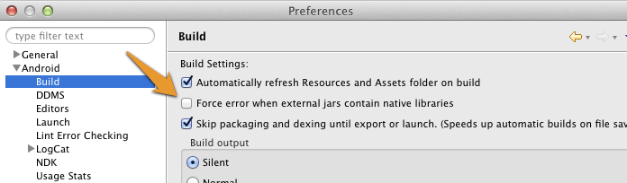

Setup Guide Android
Project Setup Android Studio
This guide uses Android Studio, if for some reason you can't use Android Studio yet, please refer to the guide below on how to setup an Eclipse project. Please note that Eclipse support is deprecated with Wikitude SDK 5.0 release and won't be supported in future versions.
Create a new Android Application Project (There is also a working SampleProject bundled in this SDK, where all these steps are already made)
Copy the file
libs/wikitudesdk.aarinto the libs folder of your module. (project root/app/libs)Open
build.gradlefrom your module, add thewikitudesdk.aaras a dependency and tell gradle to search the libs folder, like in the code below.
android {
...
}
dependencies {
compile fileTree(dir: 'libs', include: ['*.jar'])
compile (name: 'wikitudesdk', ext:'aar')
compile 'com.android.support:appcompat-v7:21.0.3'
}
repositories {
flatDir{
dirs 'libs'
}
}
- If you already purchased a license, please set the applicationId to the package name you provided us with.
defaultConfig {
applicationId "xxxx"
}
- Add the following permissions to your AndroidManifest.xml
<uses-permission android:name="android.permission.INTERNET" />
<uses-permission android:name="android.permission.ACCESS_COARSE_LOCATION" />
<uses-permission android:name="android.permission.ACCESS_FINE_LOCATION" />
<uses-permission android:name="android.permission.ACCESS_NETWORK_STATE" />
<uses-permission android:name="android.permission.ACCESS_WIFI_STATE" />
<uses-permission android:name="android.permission.ACCESS_GPS" />
<uses-permission android:name="android.permission.CAMERA" />
<uses-permission android:name="android.permission.WRITE_EXTERNAL_STORAGE" />
<uses-feature android:name="android.hardware.camera" android:required="true" />
<uses-feature android:name="android.hardware.location" android:required="true" />
<uses-feature android:name="android.hardware.sensor.accelerometer" android:required="true" />
<uses-feature android:name="android.hardware.sensor.compass" android:required="true" />
<uses-feature android:glEsVersion="0x00020000" android:required="true" />
<uses-sdk android:targetSdkVersion="19" android:minSdkVersion="9"/>
- The activity holding the AR-View (called
architectViewin the following) must have setandroid:configChanges="screenSize|orientation"in theAndroidManifest.xml, for example this could look like:
<activity android:name="com.yourcompany.yourapp.YourArActivity"
android:configChanges="screenSize|orientation"/>
- Enter a valid trial license key. Read this chapter on how to obtain a free trial key.
Project Setup Eclipse
Please note that Eclipse support is deprecated with Wikitude SDK 5.0 release and won't be supported in future versions.
- Create a new Android Application Project (There is also a working SampleProject bundled in this SDK, where all these steps are already made)
- Create a
libsfolders in your project root directory and copylibs/wikitudesdk.jar In Eclipse enter
Preferences->Android->Buildand ensure the optionForce error when external jars contain native librariesis unchecked
Add the following permissions to your Manifest.xml
<uses-permission android:name="android.permission.INTERNET" />
<uses-permission android:name="android.permission.ACCESS_COARSE_LOCATION" />
<uses-permission android:name="android.permission.ACCESS_FINE_LOCATION" />
<uses-permission android:name="android.permission.ACCESS_NETWORK_STATE" />
<uses-permission android:name="android.permission.ACCESS_WIFI_STATE" />
<uses-permission android:name="android.permission.ACCESS_GPS" />
<uses-permission android:name="android.permission.CAMERA" />
<uses-permission android:name="android.permission.WRITE_EXTERNAL_STORAGE" />
<uses-feature android:name="android.hardware.camera" android:required="true" />
<uses-feature android:name="android.hardware.location" android:required="true" />
<uses-feature android:name="android.hardware.sensor.accelerometer" android:required="true" />
<uses-feature android:name="android.hardware.sensor.compass" android:required="true" />
<uses-feature android:glEsVersion="0x00020000" android:required="true" />
<uses-sdk android:targetSdkVersion="19" android:minSdkVersion="9"/>
- The activity holding the AR-View (called
architectViewin the following) must have setandroid:configChanges="screenSize|orientation"in theAndroidManifest.xml, for example this could look like:
<activity android:name="com.yourcompany.yourapp.YourArActivity"
android:configChanges="screenSize|orientation"/>
- Enter a valid trial license key. Read this chapter on how to obtain a free trial key.
AR View in Activity
Keep in mind that the Wikitude SDK is not a native Android SDK as you know from other SDK's. The basic concept is to add an architectView to your project and notify it about lifecycle events. The architectView creates a camera surface and handles sensor events.
The experience itself, sometime referred to as ARchitect World, is implemented in JavaScript and packaged in your application's asset-folder (as in this project) or on your own server.
The experiences are written in HTML and JavaScript and call methods in Wikitude's AR-namespace (e.g. AR.GeoObject).
You have to include
<script src="architect://architect.js"></script>
in your HTML files to use the AR namespace and the architectView will handle them properly. To test an ARchitect World on a desktop browser, you must include ade.js tool instead to avoid JavaScript errors and see a development console.
It is recommended to handle your augmented reality experience in a separate Activity.
Declare the architectView inside a layout XML.
E.g. Add this within FrameLayout's parent tags.
<com.wikitude.architect.ArchitectView android:id="@+id/architectView"
android:layout_width="fill_parent" android:layout_height="fill_parent"/>
ArchitectView is creating a camera surface so ensure to properly release the camera in case you're using it somewhere else in your application.
Besides a camera (front or back-facing) the ArchitectView also makes use of compass and accelerometer values, requires OpenGL 2.0 and at least Android 4.0.
ArchitectView.isDeviceSupported(Context context) checks whether the current device has all required hard- and software in place or not.
It is very important to notify the ArchitectView about life-cycle events of the Activity.
Call architectView's onCreate(), onPostCreate(), onPause(), onResume(), onDestroy() inside your Activity's lifecycle methods.
Best practice is to define a member variable for the architectView in your Activity. Set it right after setContentViewin Activity's onCreate(), and then access architectView via member-variable later on.
this.architectView = (ArchitectView)this.findViewById( R.id.architectView );
final StartupConfiguration config = new StartupConfiguration( * license key */ );
this.architectView.onCreate( config );
Activity's onPostCreate() is the best place to load the AR experience.
this.architectView.onPostCreate();
this.architectView.load( "YOUR-AR-URL" );
The architectView.load() argument is the path to the html file that defines your AR experience. It can be relative to the asset folder root or a web-url (starting with http:// or https://).
e.g. architectView.load('arexperience.html') opens the html in your project's assets-folder, whereat architectView.load('http://your-server.com/arexperience.html') loads the file from a server.
architectView.load('arexperience.html?myarg=1')
Location
Management of the location is important in location based augmented reality applications. Depending on the use-case location is used via GPS or network and may be updated every second or once in a while.
Although the SDKExamples project provides a basic implementation of a LocationProvider this is by far not the best location strategy available for Android.
Please use your own advanced location strategy implementation in case you have special requirements.